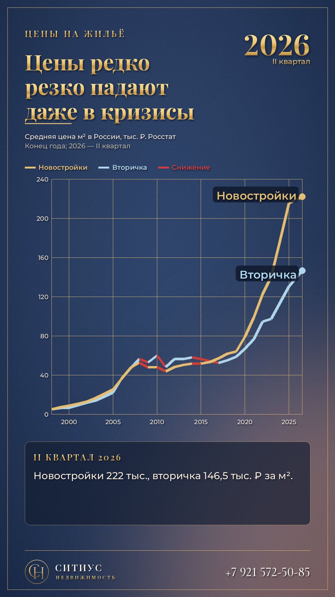

Часто ждут, что в кризис квартиры сильно подешевеют. Если смотреть на средние цены в рублях по России, картина спокойнее: рынок несколько раз снижался, но резкого обвала, как в долларах после 1998 или 2008 года, не было. Новостройки и вторичка при этом вели себя неодинаково.

Новостройки
По данным Росстата, средняя цена квадратного метра на первичном рынке на конец 2008 года составляла 52,5 тыс. ₽, на конец 2017-го — 56,9 тыс. ₽. За девять лет это рост примерно на 8%. Внутри срока были снижения: около 9% в 2009 году и ещё около 9% в 2011-м. В 2015 году средняя почти не изменилась (чуть ниже 0,5%).
После 2020 года, с запуском льготной ипотеки, средняя цена новостройки росла уже заметно быстрее. На конец 2025 года она составила 215,3 тыс. ₽ за м². К II кварталу 2026 года — 222,0 тыс. ₽, около +3% с конца 2025 года. К III кварталу 2026-го Росстат даёт 226,5 тыс. ₽ (около +5% с конца 2025 года). По оценке ДОМ.РФ, за 10 месяцев 2026 года рост на первичном рынке составил 6,3% — примерно на уровне инфляции.
Вторичка
За те же 2008–2017 годы средняя цена готового жилья не выросла, а снизилась примерно на 7%: с 56,5 до 52,3 тыс. ₽ за м². Снижения были в 2009 году (около 6%), в 2011 году (в официальном ряду спад после скачка 2010 года) и затем три года подряд в 2015–2017. От пика конца 2014 года к концу 2017-го вторичка потеряла около 10%.
На конец 2025 года средняя цена вторички, по Росстату, составила 130,4 тыс. ₽ за м². К II кварталу 2026 года — 146,5 тыс. ₽, около +12% с конца 2025 года. Данные за III квартал 2026 по стране на момент подготовки текста ещё не опубликованы.
Вторичка по-прежнему заметно дешевле новостройки: на II квартал 2026 года разница средних по России — около 75,5 тыс. ₽ за м². Разрыв зависит от города и от того, как считают: по объявлениям, по сделкам или по официальной средней. В домах последних лет готовое жильё иногда стоит сопоставимо с новостройкой.
Для покупателя это значит: ждать резкого обвала обычно не стоит, но и формула «цены только растут» слишком грубая. Имеет смысл смотреть на конкретный объект, на разницу между новостройкой и готовой квартирой и на то, что остаётся после инфляции.
Частые вопросы
Правда ли, что за 30 лет цены падали всего дважды и только на 3–4%?
Нет. Это не подтверждается данными Росстата ни по новостройкам, ни по вторичке. У новостроек снижения около 9% были в 2009 и в 2011 годах. У вторички — в 2009, в 2011 и три года подряд в 2015–2017. Если считать в долларах или с поправкой на инфляцию, падения заметнее. В Москве в отдельные кризисы снижение доходило до 10–20%.
Почему с 2008 по 2017 год цифры по новостройкам и вторичке так различаются?
У новостроек средняя цена в рублях за эти девять лет выросла примерно на 8%, у вторички снизилась примерно на 7%. Это номинальные средние по стране, без поправки на инфляцию: в реальном выражении оба рынка за этот срок потеряли. Внутри периода были и снижения, и восстановление.
Стоит ли откладывать покупку в ожидании обвала?
Обычно нет: в рублях рынок чаще замирает, чем резко падает. Но и переплачивать из-за мысли, что «завтра будет только дороже», не обязательно. Лучше оценить конкретный объект, сроки, способ оплаты и разницу между новостройкой и готовой квартирой.
Почему вторичка дешевле новостройки?
Средняя цена строящегося жилья по стране выше, чем готового. На разрыв влияли льготная ипотека на новостройки и состав предложения: во вторичке много квартир в старых домах. Цифра разрыва зависит от города и способа подсчёта.